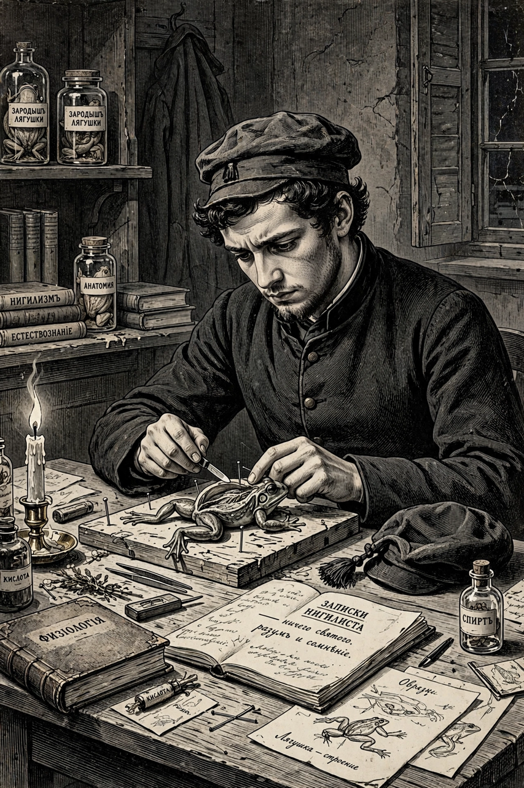

| Created by | Ivan Turgenev |
|---|---|
| Appears in | Fathers and Sons (1862) |
| Occupation | Medical student |
| Philosophy | Nihilism |
Yevgeny Vasilyevich Bazarov (Russian: Евгений Васильевич Базаров) is the protagonist of Ivan Turgenev's 1862 novel Fathers and Sons. A young medical student and self-declared nihilist, Bazarov became the defining literary portrait of the radical Russian youth of the 1860s and one of the most discussed characters in Russian literature.
Bazarov, the son of a retired army surgeon, studies medicine and natural science and rejects all authority, tradition, art, and romantic sentiment in favour of empirical, utilitarian knowledge. Visiting the estate of his friend Arkady Kirsanov, he clashes in celebrated debates with Arkady's uncle Pavel Petrovich, an aristocratic liberal of the older generation — the novel's central "fathers and sons" conflict. Bazarov's credo holds that "a good chemist is twenty times more useful than any poet" and that nature is not a temple but a workshop, with man its workman.
His philosophy is tested when he falls reluctantly in love with the wealthy, composed widow Anna Sergeyevna Odintsova, whose rejection of him unsettles his self-image. Returning to his parents' modest home, Bazarov throws himself into medical work among the peasants; while performing an autopsy on a victim of typhus he cuts himself, contracts the infection, and dies — facing death with composure, asking Odintsova to visit him and comfort his parents.
On publication, Bazarov polarised Russian readers: radical critics such as Dmitry Pisarev embraced him as a model of the "new man", while conservatives saw a caricature of youth radicalism. Turgenev claimed sympathy for his creation, calling Bazarov his "favourite child". The character popularised the word nihilist across Europe and remains a reference point in debates about materialism, generational conflict, and the tension between science and feeling.
From Wikipedia, the free encyclopedia. Recreated article.